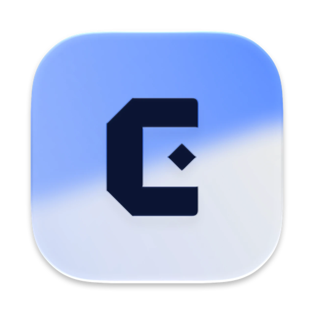
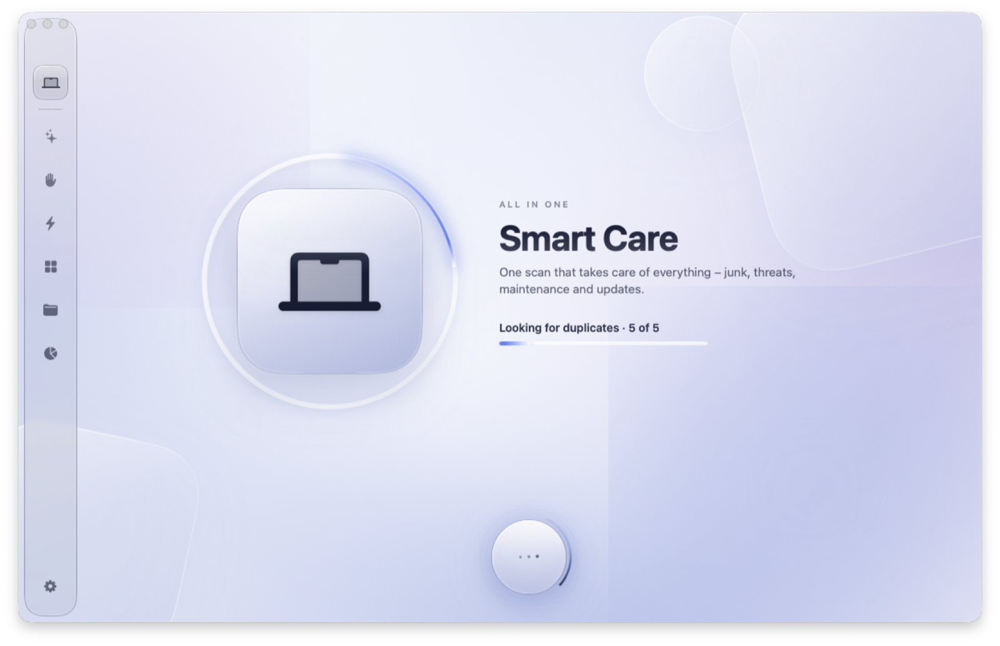
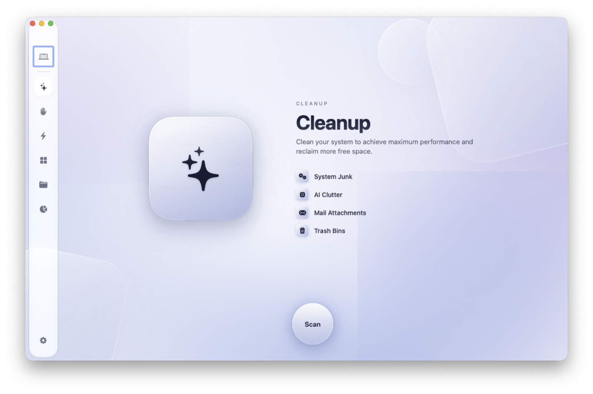
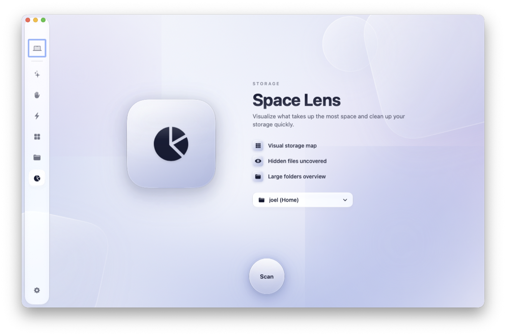

Smart Care
One scan that takes care of everything – junk, threats, maintenance and updates. Review each finding, then run it all with a single click.

Cleanable clears out junk, checks for threats, keeps your Mac maintained and shows exactly what takes up space – all in one calm, native app.

Start with Smart Care for a full check-up, or dive into a single tool when you know exactly what you want.
One scan that takes care of everything – junk, threats, maintenance and updates. Review each finding, then run it all with a single click.
Reclaim space from caches, logs, Xcode build data, developer and AI model caches, mail attachments and the Trash.
Checks launch agents and daemons for known adware, broken items and unsigned code.
Flush DNS, free purgeable space and RAM, reindex Spotlight and tidy login and background items.
Uninstall apps with all their leftovers, find updates via Sparkle and Homebrew, and clear orphaned files.
Surface large files, exact duplicates and downloads you haven't touched in months. Nothing is removed without your say.
An interactive map of your disk. See which folders are heavy at a glance and drill down to the files behind them.
Built natively with SwiftUI and Liquid Glass. Fine light follows your pointer, glass tiles catch the light, and every action is one clear step.


Files go to the Trash by default, so you can always put them back. Risky items are never preselected.
Every scan runs locally. No accounts, no tracking – nothing about your files ever leaves your computer.
A lightweight SwiftUI app for Apple silicon and Intel – fast to launch, gentle on battery, at home on macOS.
Cleanable is in final polish. It will be available for macOS 14 Sonoma and later.